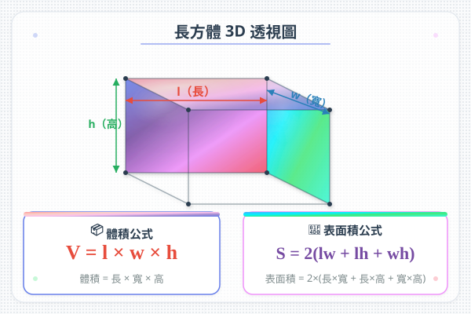

| # | Question | Difficulty | Answer Area |
|---|---|---|---|
| 1 | 🔲 一個Square有幾個邊？幾個角？（平面圖形） | 🌱 | |
| 2 | 📦 一個鞋盒係咩3D Solid形狀？ | 🌱 | |
| 3 | 🥫 一個汽水罐係咩3D Solid形狀？ | 🌱 | |
| 4 | ⚽ 一個足球係咩3D Solid形狀？ | 🌱 | |
| 5 | 🔺 三角柱體有幾個Rectangle面？（提示：想像一個三角柱體） | 🌿 |
| 3D Solid | 面數 | 棱數 | 頂點數 |
| 長方體 | 6 | 12 | 8 |
| 正方體 | 6 | 12 | 8 |
| # | Question | Difficulty | Answer Area |
|---|---|---|---|
| 6 | 正方體有＿＿個面，＿＿條棱，＿＿個頂點 | 🌱 | |
| 7 | Circle柱體有幾個平面？幾個曲面？ | 🌿 | |
| 8 | 三角柱體有幾個Rectangle面？幾個Triangle面？共幾個面？ | 🌿 | |
| 9 | 球體有＿＿個面，＿＿條棱，＿＿個頂點 | 🌿 |
| # | Question | Difficulty | Answer Area |
|---|---|---|---|
| 10 | 把以下分類：柱體/錐體/球體：鞋盒、足球、雪糕筒、骰仔 | 🌱 | |
| 11 | 正方體的每個面是什麼形狀？（Square/Rectangle/Triangle） | 🌱 | |
| 12 | 下面哪些是柱體？A.汽水罐 B.雪糕筒 C.鞋盒 D.籃球 | 🌱 |
| # | Question | Difficulty | Answer Area |
|---|---|---|---|
| 13 | 一個3D Solid有 6 個面，每個面都是Rectangle。這是什麼3D Solid？ | 🌿 | |
| 14 | 三角柱體有幾個面？其中幾個是Rectangle？幾個是Triangle？ | 🌿 | |
| 15 | 用 6 個Square可以砌出什麼3D Solid？ | 🌿 |
| # | Question | Difficulty | Answer Area |
|---|---|---|---|
| 16 | 一個3D Solid有 5 個面，其中 2 個是Triangle，3 個是Rectangle。這是什麼3D Solid？ | 🌳 | |
| 17 | 正方體有 8 個頂點。如果把所有頂點都削去（每個頂點削成一個小Triangle面），新的3D Solid有多少個面？ | 🏔️ | |
| 18 | 一個四角錐體有幾個面？幾個棱？幾個頂點？（想像金字塔！） | 🌳 |
| # | Question | Difficulty | Answer Area |
|---|---|---|---|
| 19 | 📦 一個禮物盒是正方體，每邊長 15cm。用絲帶繞一圈（十字綁法），最少要多少 cm 絲帶？ | 🌳 | |
| 20 | 🥫 一個Circle柱體汽水罐，兩端是什麼形狀？ | 🌱 | |
| 21 | 🎪 一個帳篷的形狀是什麼3D Solid？有幾個Triangle面？ | 🌿 | |
| 22 | 🏢 一座大廈是長方體形狀。如果長 30m、闊 20m、高 50m，這座大廈有多少對大小相同的面？ | 🌿 | |
| 23 | 🎲 一個骰仔（正方體）的六個面上分別有 1-6 點。對面的點數相加等於 7。如果看到的面是 1、2、3，看不到的三個面的點數之和是多少？ | 🌳 |
| # | Question | Difficulty | Answer Area |
|---|---|---|---|
| H1 | 寫出以下物品的3D Solid名稱：骰仔＿＿、足球＿＿、汽水罐＿＿ | 🌱 | |
| H2 | 長方體有＿＿面、＿＿棱、＿＿頂點 | 🌱 | |
| H3 | 柱體和錐體有什麼分別？寫出一個柱體和一個錐體的名稱。 | 🌿 | |
| H4 | 下面哪些是柱體？A.Circle柱體 B.Circle錐體 C.三角柱體 D.四角錐體 E.球體 | 🌿 | |
| H5 | 正方體有 8 個頂點，每個頂點由幾個面相交而成？ | 🌿 |
| # | Question | Difficulty | Answer Area |
|---|---|---|---|
| H6 | 一個五角柱體有幾多個面？其中幾多個是Rectangle？幾多個是五邊形？ | 🌳 | |
| H7 | 正方體每邊長 10cm。沿著所有棱貼膠紙，共需要多少 cm 膠紙？ | 🌳 | |
| H8 | 用 8 個小正方體（每邊 1cm）可以砌出一個大正方體嗎？如果可以，大正方體每邊幾多 cm？如果不可以，砌出的長方體尺寸是多少？ | 🏔️ |
| # | Common Error | Correct Approach |
|---|---|---|
| 1 | 柱體同錐體搞亂 | 柱體=兩個相同底；錐體=一個底+尖頂 |
| 2 | 數面時漏咗底面或計重複 | 系統地數：上、下、前、後、左、右 |
| 3 | 曲面當平面 | Circle柱體的曲面不是平面！P3 當曲面=1面 |
| 4 | 球體的面數 | 球體全部是曲面，沒有平面 |
| 5 | 正方體 vs 長方體 | 正方體 = 6 面全等Square；長方體 = 3 對Rectangle |
| 6 | 棱的數量數錯 | 每個頂點連接 3 條棱，用頂點推算 |
| 7 | 3D Solid名稱同平面名稱搞亂 | Square(2D) ≠ 正方體(3D)；Circle形(2D) ≠ 球體(3D) |